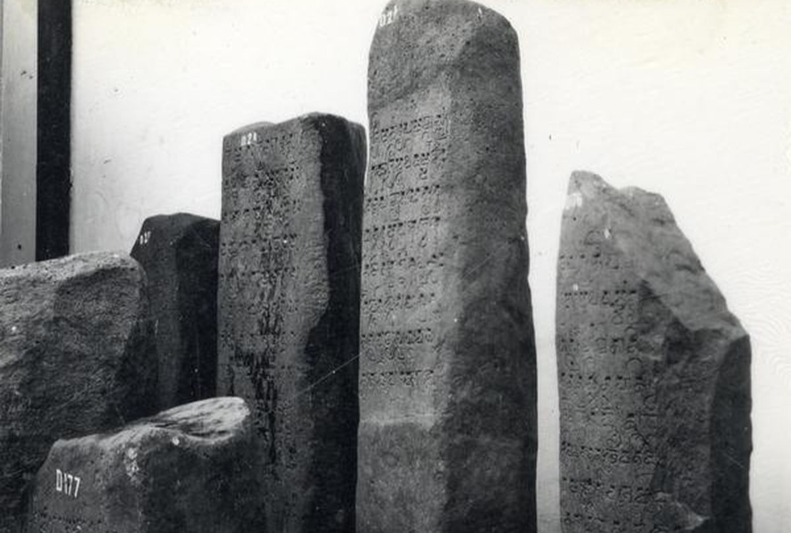

Relief Peninggalan kerajaan

Nama Prasati : Prasati Manjustri
Tahun Dibuat : abad ke-13
Peninggalan Kerajaan : Singasari
Lokasi Ditemukan : Candi Jago Desa Tumpang, Kecamatan Tumpang, Kabupaten Malang, Jawa Timur

s
Nama Prasasti : Prasasti Yupa
Tahun dibuat : abad ke-5 masehi
Peninggalan kerajaan : Kerajaan Kutai
Lokasi ditemukan : Kabupaten Kutai, Kalimantan Timur, tepatnya di hulu Sungai Mahakam.

Nama Relief : Prasasti Gajah Mada
Tahun Dibuat : abad ke-13 Masehi.
Peninggalan kerajaan : Singhasari
Lokasi ditemukan : Singosari, Malang, Jawa Timur.